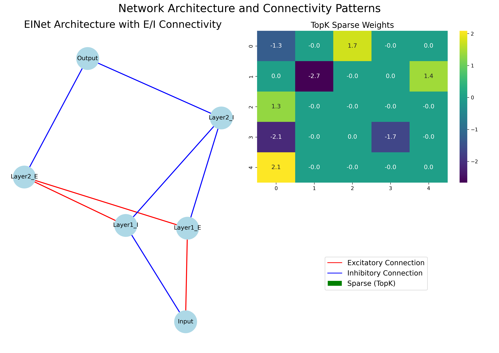
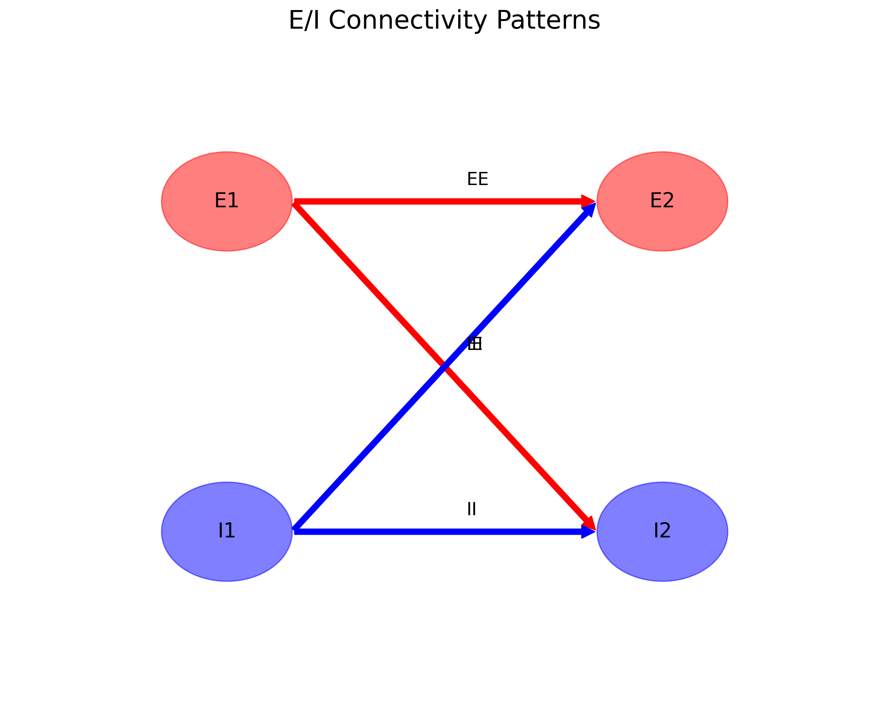

Network Architectures and Design#
This section provides comprehensive guidance on designing and configuring neural networks with the Dendritic Modeling Framework. From simple EINet models to complex hybrid architectures, learn how to build networks that capture sophisticated dendritic computation.


Figure 6 Architecture Overview: The framework supports multiple network types from simple MLPs to complex dendritic networks with E/I dynamics.#


Figure 7 E/I Connectivity Patterns: The four fundamental connection types in excitation-inhibition networks: EE (excitatory-to-excitatory), EI (excitatory-to-inhibitory), IE (inhibitory-to-excitatory), and II (inhibitory-to-inhibitory).#
Overview#
The framework uses a modular design principle with three main components:
Encoder Networks: Input preprocessing and feature extraction
Core Networks: Main computational units (EINet, DendriNet, MLP)
Decoder Networks: Output processing and classification/regression heads
This modularity allows for flexible combination of different architectures to create custom networks optimized for specific tasks.
Modular Design Principles#
Component Architecture#
Every model in the framework follows this structure:
# General model structure
model = Classifier(
encoder_network=encoder, # Optional: Input preprocessing
core_network=core, # Required: Main computation
decoder_network=decoder # Optional: Output processing
)
Encoder Networks (Optional): - CNNDownsample: Convolutional feature extraction - MLP: Dense feature transformation - Custom transforms: User-defined preprocessing
Core Networks (Required): - EINet: Excitation-inhibition networks with dendritic branches - DendriNet: Pure dendritic computation without explicit E/I - MLP: Standard multi-layer perceptrons - Hybrid: Custom combinations
Decoder Networks (Optional): - MLP: Dense classification/regression heads - CNNUpsample: Deconvolutional output processing - Custom: Task-specific output layers
Configuration Patterns#
Simple Configuration (Core only):
model:
task: classification
core_network:
type: EINet
parameters:
excitatory_layer_sizes: [64, 32]
inhibitory_layer_sizes: [32, 16]
Full Pipeline Configuration:
model:
task: classification
encoder_network:
type: CNNDownsample
parameters:
hidden_dims: [32, 64]
core_network:
type: EINet
parameters:
excitatory_layer_sizes: [128, 64]
inhibitory_layer_sizes: [64, 32]
decoder_network:
type: MLP
parameters:
hidden_dims: [32, 16]
EINet (Excitation-Inhibition Networks)#
The flagship architecture implementing biological E/I dynamics with dendritic computation.
Key Features#
Separate E/I Populations: Following Dale’s principle
Dendritic Branching: Hierarchical tree structures
Shunting Inhibition: Divisive normalization V = E/(E+I+ε)
Sparse Connectivity: TopK and DeepST selection
Parametric Reactivation: Learnable activation functions
Basic Configuration#
core_network:
type: EINet
parameters:
# Network structure
excitatory_layer_sizes: [64, 32, 16] # E-cell counts per layer
inhibitory_layer_sizes: [32, 16, 8] # I-cell counts per layer
# Dendritic branching
excitatory_branch_factors: [2, 2] # 2 branches per level
inhibitory_branch_factors: [2, 2]
# Connectivity
ee_synapses_per_branch: [50, 25] # E→E connections
ei_synapses_per_branch: [25, 12] # E→I connections
ie_synapses_per_branch: [25, 12] # I→E connections
# Core features
use_shunting: true # Enable shunting inhibition
topk_type: "standard" # Connectivity selection
reactivation_type: "param_tanh" # Activation function
Advanced EINet Features#
Sparse Connectivity Options:
parameters:
# Standard TopK (deterministic)
topk_type: "standard"
topk_k: 50
# Stochastic TopK (probabilistic)
topk_type: "stochastic"
topk_temperature: 0.3
topk_ultrafast: true
# Variance-based selection
topk_type: "variance"
variance_window: 100
# Dynamic sparse training
topk_type: "deepst"
target_density: 0.1
rewiring_mode: "global"
rewire_frequency: 5
Input Processing Modes:
parameters:
# Mode 0: Raw input to E, none to I
input_mode: 0
# Mode 1: Independent E/I pathways
input_mode: 1
independent_pathways: true
# Mode 2: Transform networks
input_mode: 2
input_net_dict:
type: "MLPInputTransform"
excitatory_hidden_dims: [32, 64]
inhibitory_hidden_dims: [16, 32]
Gradient Scaling Strategies:
parameters:
reactivation_strategy: "inverse" # Compensate vanishing gradients
topk_strategy: "conductance_dynamic" # Bio-motivated scaling
blocklinear_strategy: "distal_upweight_by_idx" # Enhance distal learning
Design Patterns for EINet#
Small Networks (< 1M parameters):
excitatory_layer_sizes: [32, 16]
inhibitory_layer_sizes: [16, 8]
excitatory_branch_factors: [2]
use_shunting: true
topk_type: "standard"
Medium Networks (1-100M parameters):
excitatory_layer_sizes: [256, 128, 64]
inhibitory_layer_sizes: [128, 64, 32]
excitatory_branch_factors: [4, 2]
use_shunting: true
topk_type: "stochastic"
topk_temperature: 0.3
Large Networks (>100M parameters):
excitatory_layer_sizes: [1024, 512, 256]
inhibitory_layer_sizes: [512, 256, 128]
excitatory_branch_factors: [8, 4, 2]
use_shunting: true
topk_type: "deepst"
target_density: 0.05
Use Cases for EINet#
Biological modeling: High biological realism with E/I dynamics
Classification tasks: Vision, text, and tabular data
Information processing: When analyzing neural information flow
Sparse learning: Efficient training with sparse connectivity
Research: Studying dendritic computation mechanisms
DendriNet (Pure Dendritic Networks)#
Branch-focused architecture without explicit E/I separation.
Key Features#
Multi-soma Design: Multiple output units per layer
Pure Dendritic Processing: Focus on branch computation
Flexible Branching: Configurable tree structures
Simplified Connectivity: No E/I constraints
Basic Configuration#
core_network:
type: DendriNet
parameters:
# Network structure
n_soma: [64, 32, 16] # Soma counts per layer
branch_factors: [4, 2] # Branching patterns
synapses_per_branch: [100, 50] # Connectivity density
# Dendritic features
use_branches: true # Enable dendritic computation
reactivation_type: "param_tanh" # Branch activation
topk_type: "standard" # Sparse connectivity
Advanced DendriNet Features#
Hierarchical Branching:
parameters:
# Simple 2-level tree: 4 → 1
branch_factors: [4]
# Complex 3-level tree: 8 → 4 → 1
branch_factors: [8, 4]
# Asymmetric tree: 6 → 2 → 1
branch_factors: [6, 2]
Branch-Specific Processing:
parameters:
# Different activations per level
reactivation_per_level: true
reactivation_types: ["linear", "param_tanh", "relu"]
# Level-specific connectivity
synapses_per_branch: [200, 100, 50] # Decreasing connectivity
Use Cases for DendriNet#
Dendritic research: Focus on branch computation without E/I complexity
Hierarchical processing: Multi-level feature extraction
Custom architectures: Building blocks for novel designs
Computational efficiency: Simplified training compared to EINet
MLP Variants#
Standard and modified multi-layer perceptrons for comparison and hybrid designs.
Available Types#
Standard MLP:
core_network:
type: MLP
parameters:
hidden_dims: [256, 128, 64]
activation: "relu"
dropout: 0.1
MatchedParam MLP (Parameter-matched baselines):
core_network:
type: MatchedParamMLP
parameters:
reference_network: "EINet" # Match parameter count
hidden_dims: [auto] # Automatically computed
activation: "relu"
Sparse MLP (With TopK connectivity):
core_network:
type: SparseMLP
parameters:
hidden_dims: [256, 128, 64]
sparsity_ratio: 0.1 # 10% connectivity
topk_type: "standard"
Use Cases for MLPs#
Baselines: Comparing against dendritic architectures
Hybrid designs: Encoder/decoder components
Ablation studies: Understanding dendritic benefits
Simple tasks: When biological realism isn’t needed
Convolutional Networks#
CNNs for image processing and hybrid vision architectures.
Available Types#
CNN Downsample (Encoder):
encoder_network:
type: CNNDownsample
parameters:
hidden_dims: [32, 64, 128]
kernel_sizes: [3, 3, 3]
strides: [1, 2, 2]
padding: [1, 1, 1]
CNN Upsample (Decoder):
decoder_network:
type: CNNUpsample
parameters:
hidden_dims: [128, 64, 32]
kernel_sizes: [3, 3, 3]
strides: [2, 2, 1]
Dendritic Convolution:
core_network:
type: DendriteConv2d
parameters:
in_channels: 64
out_channels: 128
kernel_size: 3
branch_factors: [2, 2]
use_dendritic: true
Hybrid Architecture Designs#
Combining different network types for optimal performance.
Common Patterns#
CNN + EINet Pipeline:
model:
encoder_network:
type: CNNDownsample
parameters:
hidden_dims: [32, 64]
core_network:
type: EINet
parameters:
excitatory_layer_sizes: [128, 64]
inhibitory_layer_sizes: [64, 32]
decoder_network:
type: MLP
parameters:
hidden_dims: [32, 16]
Multi-Core Architecture:
model:
multi_core: true
core_networks:
- type: EINet
parameters: {...}
- type: DendriNet
parameters: {...}
fusion_strategy: "concat" # or "attention", "weighted"
Ensemble Designs:
model:
ensemble: true
ensemble_networks:
- type: EINet
- type: MLP
- type: DendriNet
ensemble_method: "voting" # or "averaging", "stacking"
Custom Architecture Design#
Guidelines for creating novel architectures.
Design Principles#
Start Simple: Begin with basic configurations
Incremental Complexity: Add features gradually
Biological Inspiration: Consider neural mechanisms
Performance Trade-offs: Balance accuracy vs. efficiency
Creating Custom Networks#
Step 1: Define Architecture:
from dendritic_modeling.networks.base import BaseNetwork
class CustomNetwork(BaseNetwork):
def __init__(self, input_dim, custom_param):
super().__init__()
self.custom_param = custom_param
# Define layers here
def forward(self, x):
# Implement forward pass
return output
Step 2: Register with Factory:
from dendritic_modeling.core.factory import register_network
@register_network("CustomNetwork")
class CustomNetwork(BaseNetwork):
# Implementation
Step 3: Configure in YAML:
core_network:
type: CustomNetwork
parameters:
custom_param: value
Scaling Considerations#
Architecture scaling guidelines for different model sizes.
Memory and Compute Scaling#
Model Size |
Recommended Architecture |
Key Parameters |
Optimizations |
|---|---|---|---|
Small (<1M) |
Simple EINet |
1-2 layers, small branches |
Standard TopK |
Medium (1-100M) |
Multi-layer EINet |
3-4 layers, moderate branches |
Stochastic TopK, AMP |
Large (100M-1B) |
Deep EINet + CNN |
5+ layers, complex branches |
DeepST, FSDP |
XLarge (>1B) |
Hybrid ensemble |
Multiple cores, sparse |
Full FSDP, CPU offload |
Parameter Estimation#
from dendritic_modeling.utils.estimation import estimate_parameters
# Estimate parameters for a configuration
config = {
"type": "EINet",
"parameters": {
"excitatory_layer_sizes": [256, 128, 64],
"inhibitory_layer_sizes": [128, 64, 32]
}
}
param_count = estimate_parameters(config)
print(f"Estimated parameters: {param_count:,}")
Best Practices#
Architecture Selection Guidelines#
Choose EINet when: - High biological realism required - Studying E/I dynamics - Classification/regression tasks - Sparse connectivity beneficial
Choose DendriNet when: - Focus on dendritic computation - Simplified training desired - Hierarchical processing needed - Building custom architectures
Choose MLP when: - Baseline comparisons needed - Simple tasks - Component in hybrid design - Fast prototyping required
Choose CNN when: - Image/vision tasks - Spatial feature extraction - Need for translation invariance - Large-scale vision problems
Performance Optimization#
Start with standard configurations
Profile bottlenecks before optimizing
Use appropriate sparsity for your data size
Enable mixed precision for large models
Consider gradient checkpointing for memory
Common Pitfalls#
Over-parameterization: Too many branches/connections
Under-utilization: Not using available compute efficiently
Mismatched complexity: Architecture doesn’t fit task
Ignoring biological constraints: Unrealistic connectivity patterns
Next Steps#
Now that you understand the architecture options:
Start with EINet: Try the flagship architecture (einet)
Explore configurations: See ../configuration/index
Custom designs: Learn custom_design
Performance tuning: Check Performance, Speed, and Efficiency
See also
Core Concepts - Understanding the biological principles
../configuration/index - Complete configuration options
../tutorials/index - Step-by-step architecture tutorials